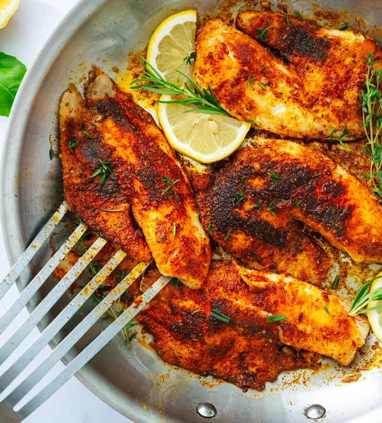

Easy Blackened Tilapia
This Blackened Tilapia recipe comes together in 15 minutes with big flavors!
Each tender bite is loaded with spices.
Craving seafood for dinner? Try this Blackened Tilapia! This Cajun technique for cooking seafood and meat makes it taste restaurant-style in minutes, ideal for fast and easy meals. Here we used homemade blackened seasoning, which has a savory intrigue and makes a crispy darkened crust on the outside of the fish. Tilapia is a fun variation on the more popular blackened salmon: it’s one of our favorite ways to cook this mild white fish! This one was a big winner at our house and we hope it will be at yours too.

Ingredients
- 4 4-ounce tilapia fillets, (wild caught if possible)
- 1 tablespoon butter (or more olive oil for dairy free)
- 2 tablespoons olive oil, plus one drizzle
- ½ teaspoon kosher salt
- 2 tablespoons homemade Blackened Seasoning (or purchased seasoning)
- Lemon wedges, for serving
Instructions
- Pat the tilapia dry with a clean towel. Rub it with a drizzle of oil and sprinkle it with the kosher salt and blackened seasoning.
- Heat a large skillet (not non-stick*) over medium high heat and add the butter and olive oil.
- When butter is melted, add the tilapia and cook for 2 to 3 minutes until cooked about halfway to the center of the thickest part.
- Flip the tilapia (a fish spatula makes easy work of it). Tilt the pan down slightly and quickly spoon the pan juices over the top of the fish a few times. Cook for 2 to 5 minutes, depending on the thickness, until just tender and starting to flake (the internal temperature should be between 140 Fahrenheit in the center when removed). Remove from the heat and serve, spritzed with lemon wedges.
More Recipes